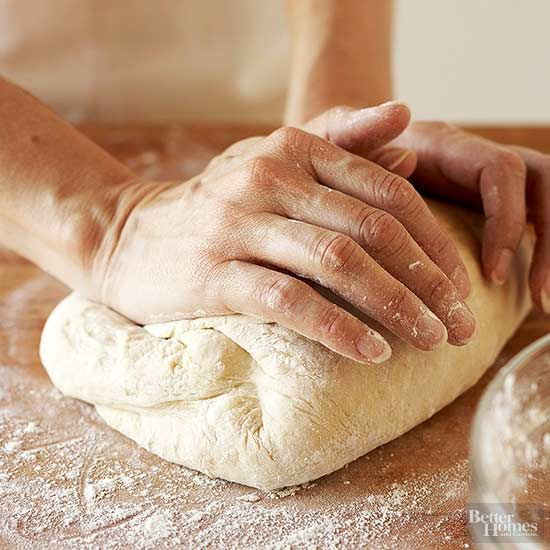
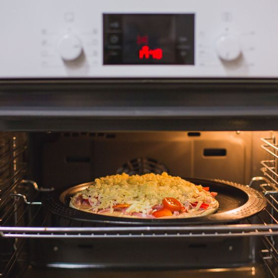
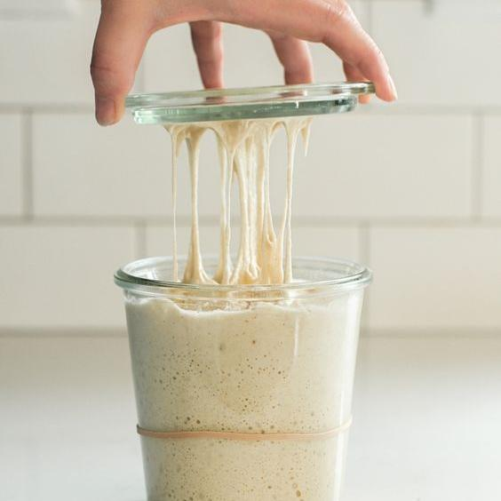
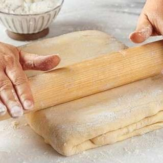
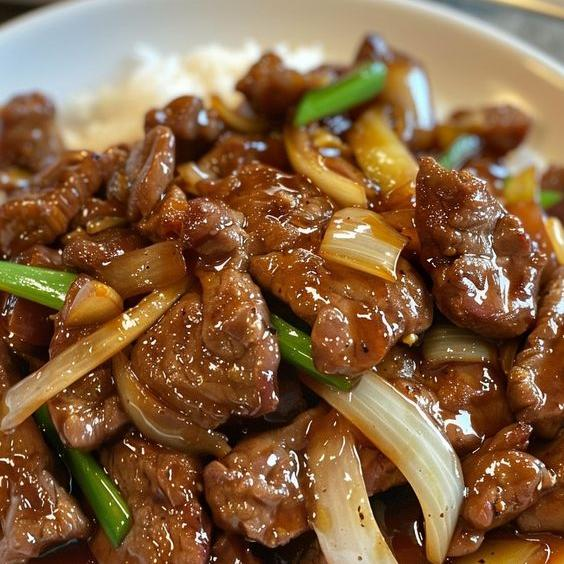
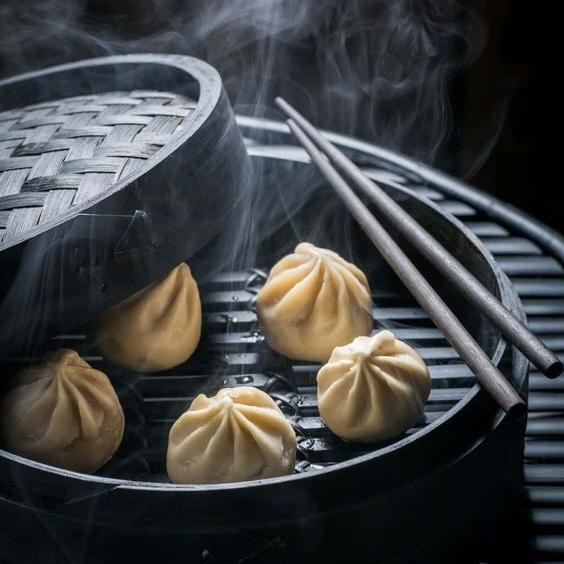
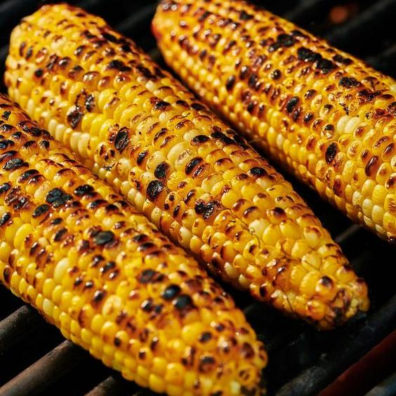
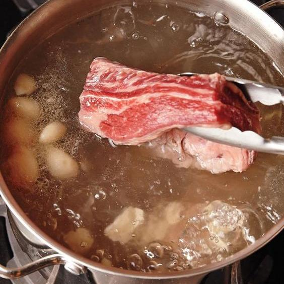

Baking

Dough Kneading
Mastering dough elasticity

Oven Timing
Understanding bake times

Sourdough Starter
Creating and feeding starter

Pastry Folding
Perfecting lamination
Knife Skills

Chopping Onions
Consistent dicing techniques

Mincing Garlic
Quick and fine mincing

Julienne Cut
Precision slicing

Deboning Chicken
Efficient deboning methods
Temperature Control

Heat Control
Low, medium, and high heat

Oil Temperature
Perfect frying conditions

Using a Meat Thermometer
Safe and juicy results

Searing Meat
Achieving perfect crust
Cooking Techniques

Stir-Frying
High heat, quick cooking

Steaming
Healthy, gentle cooking

Grilling
Perfect char and flavor

Poaching
Gentle cooking in liquid